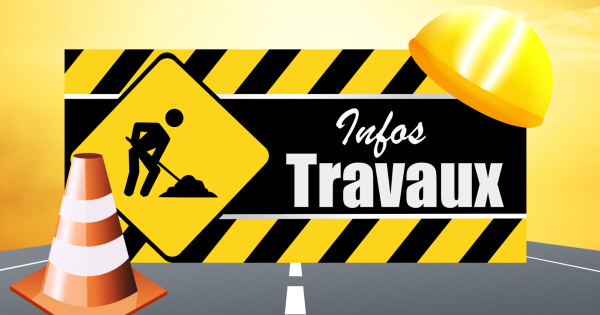
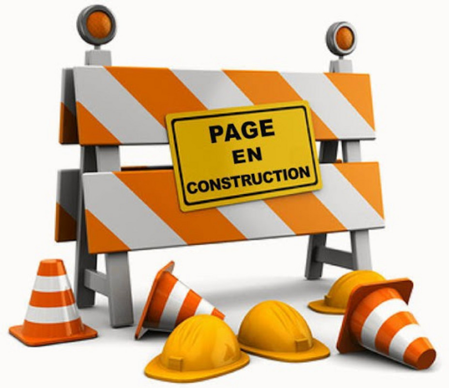

Stage 1ère année BTS
Développement web
Site de Stage
Réalisation d'un site internet dans le cadre de mon stage de 1ère année de BTS SIO. Ce projet m'a permis de mettre en pratique mes compétences en développement web dans un contexte professionnel réel.
Contexte
- •Stage de 1ère année de BTS SIO
- •Création d'un site vitrine pour l'entreprise
- •Travail en autonomie sous supervision
- •Livraison d'un produit fonctionnel
Technologies
HTML
CSS
PHP